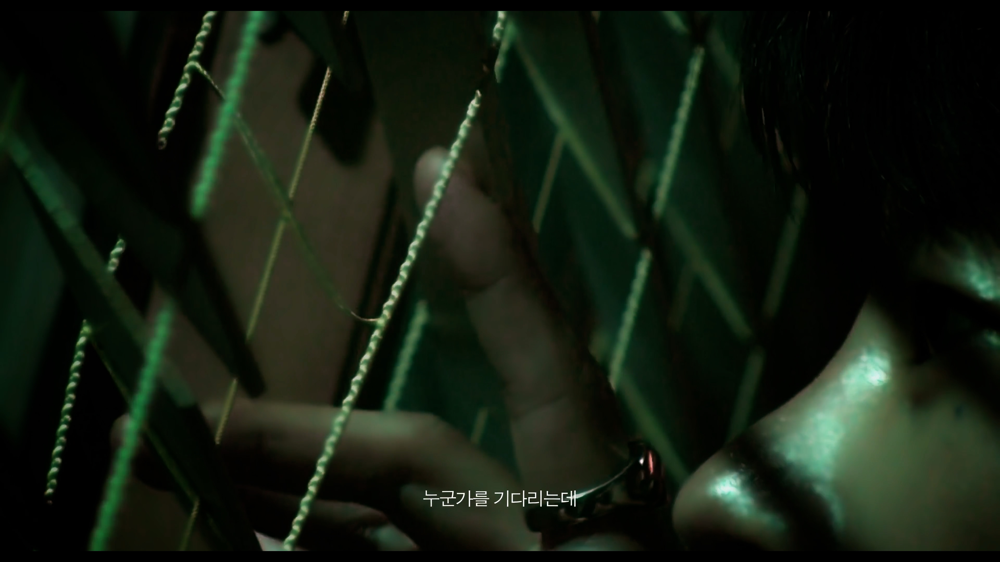
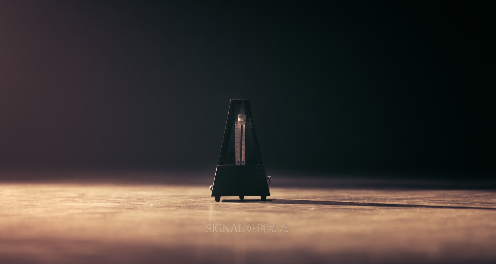
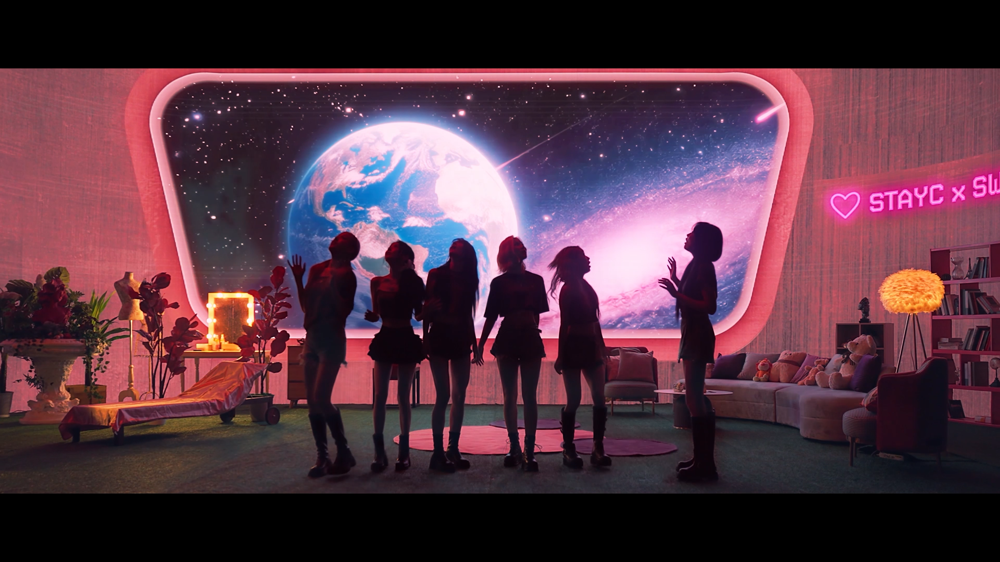

OUR CAPABILITIES
WHAT WE DO.
하나의 비전. 완전한 프로덕션.
콘셉트에서 현장까지,
모든 과정이 같은 방향을 향하도록.

01 / EXPERTISE
CREATIVE
DIRECTION
보이는 것 너머를 기획합니다.
브랜드와 기업, 아티스트의 메시지를 이해하고 콘셉트 기획부터 영상·현장 연출까지 시각적 방향을 설계합니다.
RELATED WORK / HEARTCREAM
02 / EXPERTISE
MEDIA
PRODUCTION
스크린의 경계를 지웁니다.
브랜드필름, 제품 광고, 기업·기관 홍보영상부터 아티스트 콘텐츠와 공연 영상까지. 기획, 촬영, 편집과 후반 제작 전반을 다룹니다.
RELATED WORK / SIGNAL
03 / EXPERTISE
LIVE
PRODUCTION
영상과 무대가 교감합니다.
콘서트와 팬미팅, 컨퍼런스와 기업 행사. 무대 연출, 현장 운영, 라이브 송출을 하나의 흐름으로 연결합니다.
RELATED WORK / PARTNER CONNECT
04 / EXPERTISE
AUDIO VISUAL
PRODUCTION
정교한 빛과 소리로 완성합니다.
음향과 영상, LED와 현장 시스템을 설계하고 운영해 무대의 감정을 온전히 전달합니다.
LIVE & SYSTEM WORK